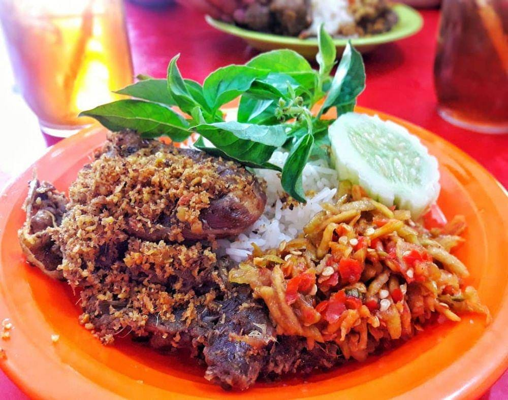
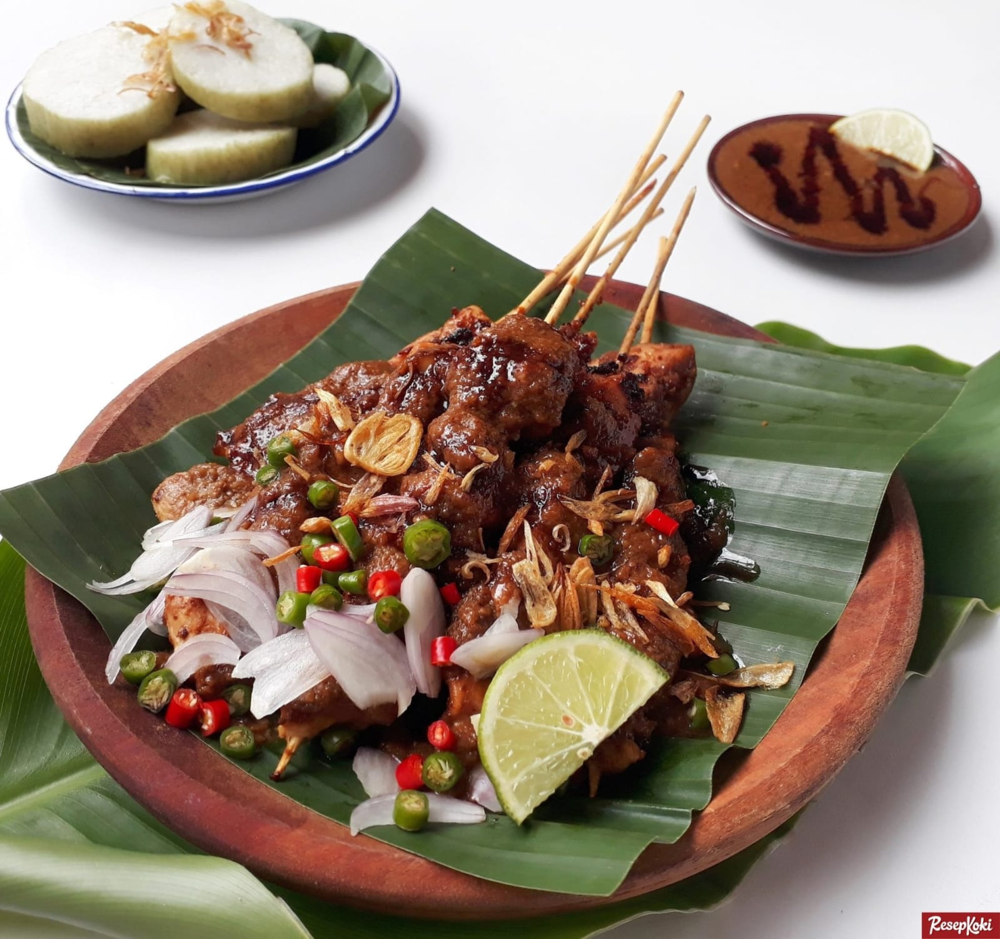
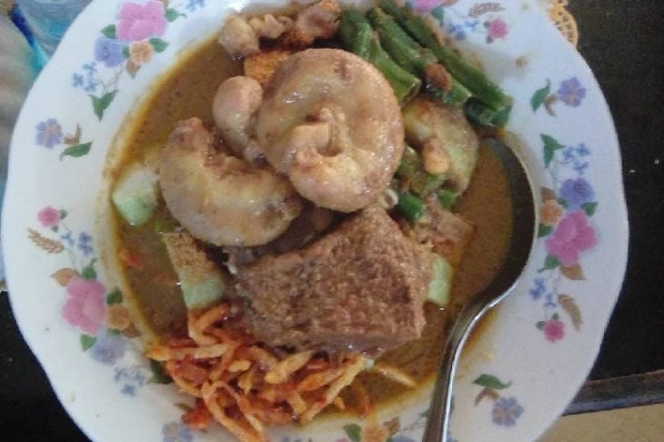
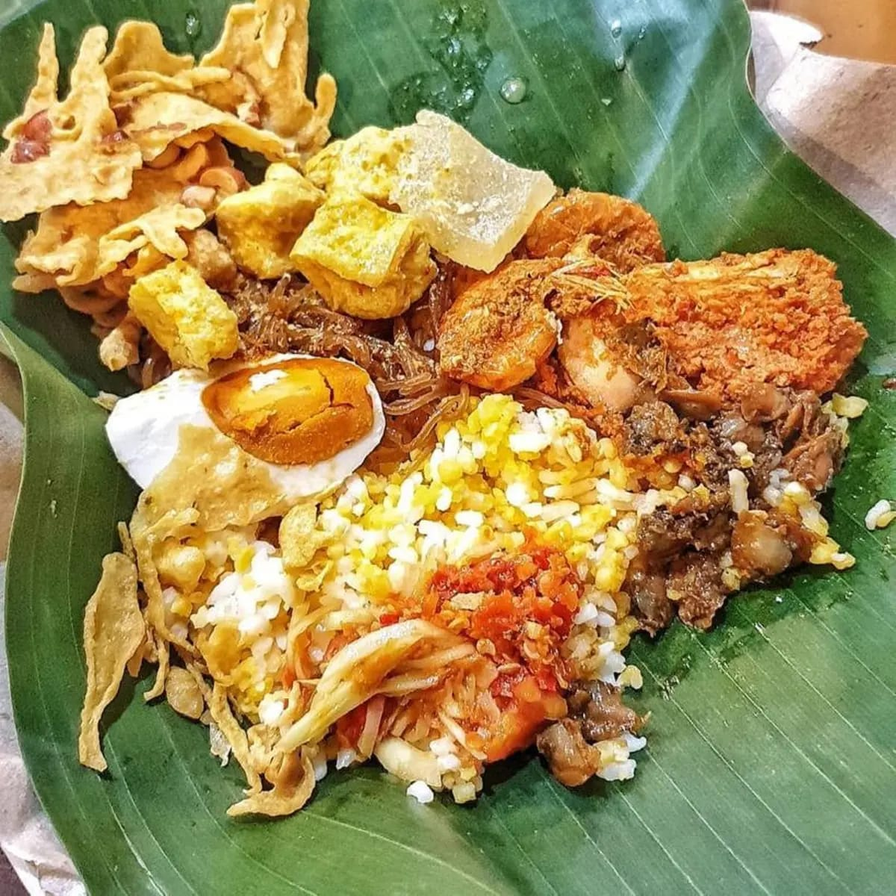
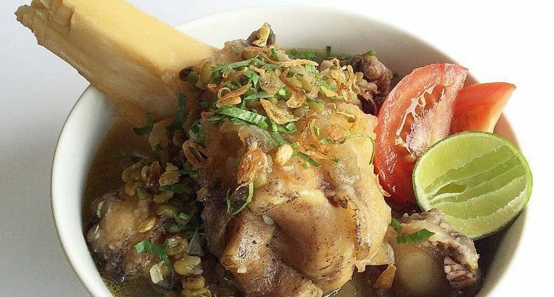
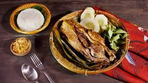
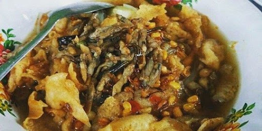
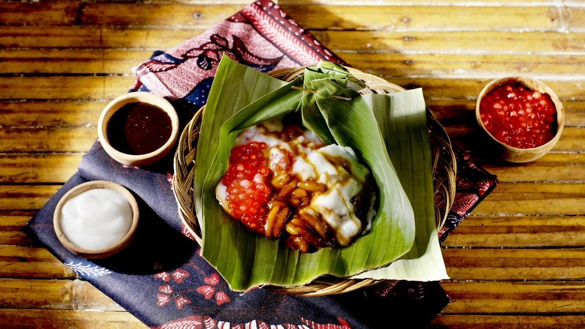

Bebek Sinjay
Bebek goreng terkenal dari Bangkalan dengan sambal pencit yang khas.
Detail

Sate Madura
Sate ayam atau kambing dengan bumbu kacang khas Madura.
Detail

Topak Lada
Masakan berkuah santan pedas yang biasa disajikan saat lebaran.
Detail

Nasi Serpang
Nasi dengan lauk lengkap khas pesisir Bangkalan.
Detail

Nasi Jagung
Makanan pokok tradisional masyarakat Madura dengan lauk sederhana.
Detail

Kaldu Kokot
Sup tulang kikil dengan kacang hijau, gurih & kaya rempah.
Detail

Bebek Songkem
Bebek kukus daun pisang, rendah lemak & kaya rempah.
Detail

Lorjuk
Kerang lorjuk khas Madura, dapat dibuat sambal & kerupuk.
Detail

Tajin Sobih
Bubur manis dari gula merah dan santan gurih.
Detail